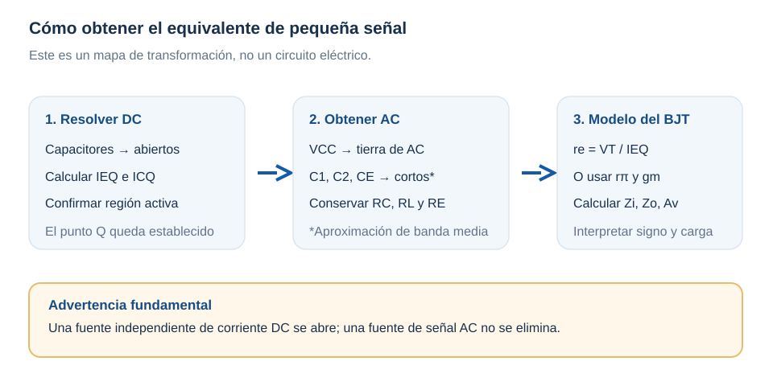
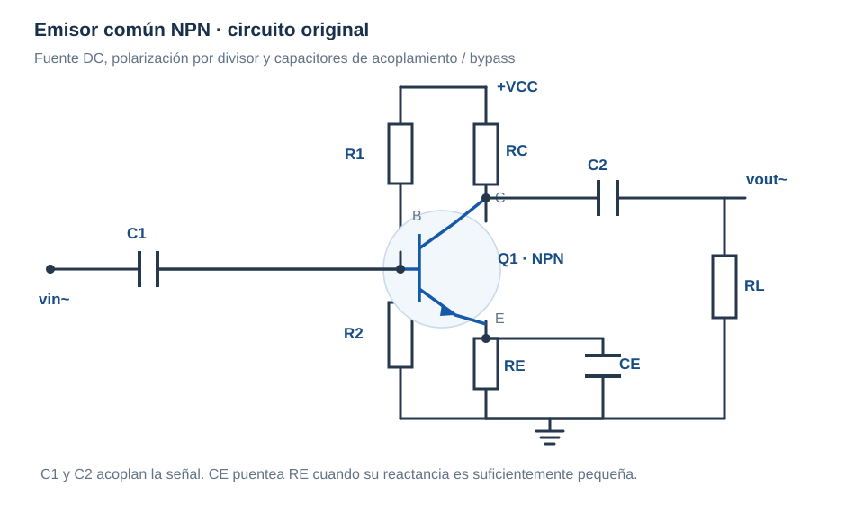
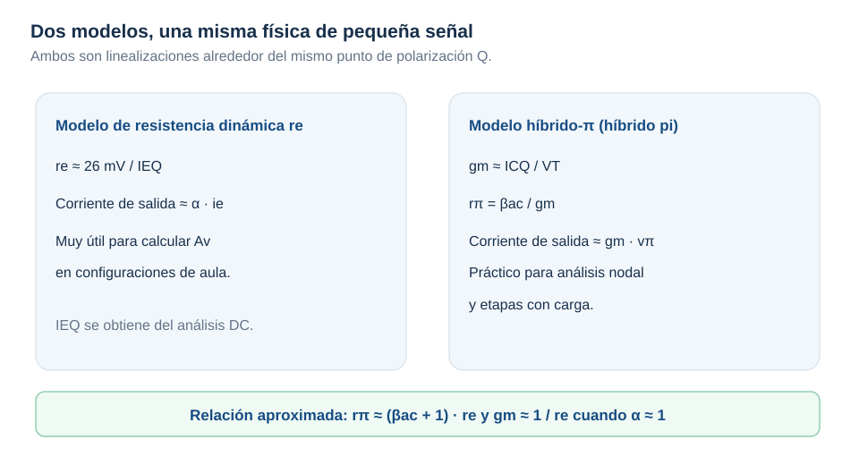
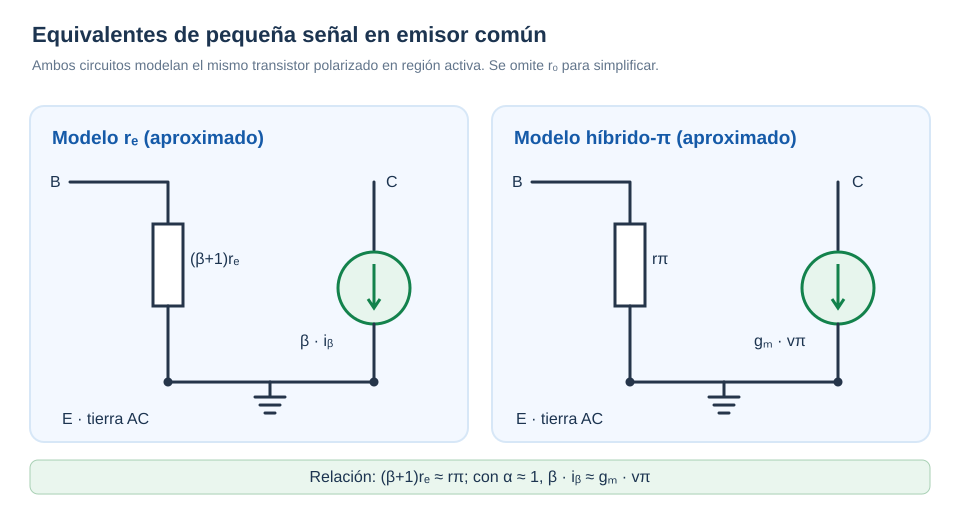

Del transistor polarizado al amplificador
Guía para estudiar paso a paso los modelos rₑ e híbrido-π. Con definiciones rigurosas, explicaciones cotidianas, esquemas y problemas resueltos para practicar antes del examen.
De la polarización DC a la amplificación de señales
En DC preguntábamos: “¿En qué punto trabaja el transistor?”. En AC la pregunta cambia: ¿cuánto cambia la salida cuando introduzco una señal pequeña? Ambas preguntas se necesitan: la segunda se responde alrededor del punto de operación Q encontrado con la primera.

Los seis pasos para construir el equivalente AC
El orden es deliberado. No comiences a sustituir \(r_e\) hasta tener clara la región de operación del circuito.
- Copiar el circuito original: marca \(V_{CC}\), resistencias, transistores, capacitores y carga.
- Resolver el punto Q en DC: para régimen permanente los capacitores ideales se consideran abiertos y se obtiene \(I_{EQ}\).
- Eliminar solo las fuentes DC independientes al obtener AC: una fuente de tensión ideal DC se convierte en tierra de AC (corto); una fuente independiente de corriente DC se abre.
- Aplicar el modelo de capacitores de banda media: acoplamientos y bypass con reactancia suficientemente pequeña se aproximan como cables.
- Insertar el equivalente del transistor: calcular \(r_e\) o los parámetros \(g_m\) y \(r_\pi\), según el modelo elegido.
- Calcular y comprobar: hallar impedancias, ganancia, inversión de fase, efecto de carga y condiciones de validez.

Resistencia dinámica del emisor: modelo rₑ
El transistor tiene una unión base-emisor que se comporta como un diodo. Cuando la corriente cambia ligeramente, la tensión de esa unión también cambia. Su relación incremental permite aproximar una resistencia dinámica.
Del diodo al transistor
\(V_T=kT/q\) es la tensión térmica; cerca de temperatura ambiente es aproximadamente \(25.9\,\mathrm{mV}\). Se utiliza \(26\,\mathrm{mV}\) por conveniencia didáctica. Usa siempre unidades consistentes: si divides 26 mV entre 2 mA, el resultado es 13 Ω.
Calcula \(r_e\) sin saltarte pasos
Se encontró en DC \(I_{EQ}=2\,\mathrm{mA}\) y el transistor está en activa.
- Escribe el dato: \(I_{EQ}=0.002\,\mathrm{A}\).
- Asume \(V_T\approx 0.026\,\mathrm{V}\) a temperatura ambiente.
- Divide: \(r_e=0.026/0.002\).
- Resultado: \(\boxed{r_e\approx13\,\Omega}\).
- Comprueba unidades: V/A = Ω y razona si al duplicar \(I_E\) se reduce a la mitad.
Calculadora exploratoria
Menor corriente → mayor rₑ.
Modelo rₑ o híbrido-π: puedes comparar ambos
Son dos descripciones equivalentes de la misma región activa, aunque cambian las variables más cómodas. No se trata de escoger uno “correcto” y otro “incorrecto”.


Modelo \(r_e\) — punto de partida
Ventajoso para aprender a calcular ganancia sin introducir demasiados parámetros simultáneamente.
Modelo híbrido-π — análisis nodal
El mismo resultado se obtiene para el emisor en AC a tierra: \(A_v\approx-g_m(R_C\parallel R_L)\).
Si \(I_{CQ}=1.98\,\mathrm{mA}\), \(I_{EQ}=2\,\mathrm{mA}\) y \(\beta_{ac}=100\):
Comprueba: \((\beta+1)r_e=101\cdot13=1313\,\Omega\), coherente con \(r_\pi\).
Emisor común: ganancia, fase y efecto de la carga
El emisor común (CE) se utiliza frecuentemente para amplificar tensión. Al aumentar la señal de base, aumenta la corriente de colector, aumenta la caída en \(R_C\) y disminuye el voltaje de colector. De ahí sale el signo negativo de la ganancia.
Con emisor bypassado en banda media
Si \(r_o\) no se puede despreciar, aparece en paralelo con la resistencia efectiva de colector.
Con resistencia de emisor sin bypass
Son aproximaciones de aula que suponen \(r_o\) grande, transistor activo y que \(v_i\) se mide en la base; \(R_E\) representa la resistencia de emisor no puenteada en AC.
\(I_E=2\,mA\), \(R_C=3.3\,k\Omega\), \(R_L=10\,k\Omega\), \(r_o\) muy grande. A temperatura ambiente: \(r_e=13\,\Omega\).
- La carga en AC se une al colector: \(R_{C,eq}=3.3k\parallel10k=2.481\,k\Omega\).
- Con \(R_E\) bypassada: \(A_v\approx-2481/13=\boxed{-190.8}\).
- Si quedan \(220\,\Omega\) sin bypass: \(A_v\approx-2481/(13+220)=\boxed{-10.65}\).
- Interpretación: el signo “−” indica inversión de fase de 180° en banda media; la carga reduce la ganancia respecto a usar solamente \(R_C\).
- Advertencia: un valor grande de \(|A_v|\) no implica que el transistor pueda entregar cualquier amplitud sin recortar: hay que comprobar margen y linealidad.
Colector común y base común: cuándo aparecen
Colector común (CC) · Seguidor de emisor
Salida en emisor. No invierte fase; típicamente tiene \(A_v\) cercano a +1, impedancia de entrada alta e impedancia de salida relativamente baja.
Base común (CB)
Entrada por el emisor y base a tierra de AC; tiene impedancia de entrada baja, corriente de salida cercana a la de entrada y ganancia de tensión que puede ser mayor que uno sin inversión.
Tabla comparativa para estudiar
| Configuración | Ganancia de tensión típica | Fase | Impedancia de entrada | Idea clave |
|---|---|---|---|---|
| Emisor común | Puede ser elevada | Invierte (−) | Media, depende de la polarización | Amplificación de tensión |
| Colector común | Cercana a +1 | No invierte (+) | Alta | Adaptación de impedancia |
| Base común | Puede ser elevada | No invierte (+) | Baja | Entrada por emisor |
Simulador exploratorio del modelo rₑ
Mueve las variables y comprueba el cambio en ganancia del emisor común. La herramienta aplica un modelo idealizado de banda media sin \(r_o\), sin limitación de amplitud y con los capacitores supuestos en corto.
Una resistencia de emisor sin bypass reduce |Av|.
Problemas guiados por configuración con pistas y verificación
No consultes la solución al principio. Intenta escribir tu procedimiento y abre una pista únicamente cuando sea necesario.
Problema A · Resistencia interna y unidades
Un BJT polarizado en activa tiene \(I_{EQ}=1.3\,mA\). Calcula \(r_e\) a 25 °C.
Pista 1 · ¿Qué corriente uso?
Pista 2 · Conversión
Resolución completa
Problema B · Emisor común, ganancia con carga
Para \(r_e=20\,\Omega\), \(R_C=2.2\,k\Omega\), \(R_L=2.2\,k\Omega\) y emisor bypassado, calcula \(A_v\).
Pista 1 · No ignores la carga
Pista 2 · Aplica la relación
Resolución completa
Problema C · Qué hace una resistencia de emisor sin bypass
Con los datos del problema B, ahora queda \(R_E=180\,\Omega\) sin bypass. ¿Cómo cambia \(A_v\)?
Pista 1
Resolución completa
Problema D · Conectar rₑ con híbrido-π
\(I_{CQ}=1\,mA\), \(\beta_{ac}=120\), \(V_T=26\,mV\). Calcula \(g_m\) y \(r_\pi\).
Pista 1
Resolución completa
Problema E · Identificar el error conceptual
Un estudiante elimina \(R_E\) del equivalente de AC de un CE aunque no hay capacitor de bypass. ¿Qué está mal?
Pista
Respuesta razonada
Problema F · Colector común (seguidor de emisor): ¿por qué la ganancia es cercana a 1?
Para un BJT polarizado en región activa con \(I_{EQ}=2\,mA\), \(R_E=1\,k\Omega\) y \(R_L=1\,k\Omega\), calcula \(r_e\), la resistencia efectiva de emisor y la ganancia aproximada desde la base. Supón condensadores de acoplamiento en cortocircuito en banda media, fuente de base ideal y \(\beta\) grande.
Pista 1 · Identificar la configuración
Pista 2 · Reglas previas
Resolución guiada y verificación
- \(r_e=26\,mV/2\,mA=13\,\Omega\).
- \(R'_E=1000\parallel1000=500\,\Omega\).
- En esta aproximación, \(A_v\approx R'_E/(R'_E+r_e)=500/513\approx\boxed{+0.975}\).
- Comprueba el resultado: es positivo (no invierte) y ligeramente menor que 1. La etapa sirve principalmente para adaptar impedancias, no para multiplicar mucho el voltaje.
Problema G · Base común: interpretar entrada pequeña y ganancia positiva
Para una etapa de base común con \(I_{EQ}=2\,mA\), \(R_C=2.2\,k\Omega\) y \(R_L=10\,k\Omega\), estima \(r_e\), resistencia efectiva del colector, ganancia de tensión desde el emisor y resistencia de entrada. Se desprecia \(r_o\), se considera \(\alpha\approx1\) y la base está a tierra de AC.
Pista 1 · ¿Dónde entra la señal?
Pista 2 · Carga equivalente
Resolución guiada y verificación
- \(r_e=26/2=13\,\Omega\) (mV/mA).
- \(R'_C=(2200\cdot10000)/(12200)\approx1803\,\Omega\).
- \(A_v\approx+1803/13\approx\boxed{+139}\), bajo las hipótesis del ejercicio.
- \(R_{in}\approx r_e\approx\boxed{13\,\Omega}\).
- Comprueba el resultado: la ganancia es positiva (no invierte), pero la impedancia de entrada es baja. Una fuente real con resistencia interna puede reducir mucho la ganancia global.
Problema H · Dos rutas, una respuesta: comparar rₑ e híbrido-π
Datos: \(I_{CQ}=1.5\,mA\), \(\beta_{ac}=100\), \(V_T=26\,mV\). Encuentra \(I_{EQ}\), \(r_e\), \(g_m\) y \(r_\pi\). Comprueba la relación entre modelos.
Pista 1 · Conecta las corrientes
Pista 2 · Calcula por rutas distintas
Resolución guiada y verificación
- \(I_{EQ}=1.5\cdot101/100=1.515\,mA\).
- \(r_e=26/1.515\approx\boxed{17.16\,\Omega}\).
- \(g_m=0.0015/0.026\approx\boxed{0.05769\,S}\).
- \(r_\pi=100/0.05769\approx\boxed{1.733\,k\Omega}\).
- Comprueba: \((\beta+1)r_e=101\cdot17.16\approx1733\,\Omega\), consistente con \(r_\pi\). No son dos transistores distintos; son dos representaciones aproximadas del mismo punto Q.
Del circuito con resistencias reales al valor de ganancia AC
En un amplificador emisor común NPN (como el esquema de la sección 02), se dispone de: \(V_{CC}=12\,V\), \(R_1=47\,k\Omega\), \(R_2=10\,k\Omega\), \(R_C=2.2\,k\Omega\), \(R_E=1\,k\Omega\), \(R_L=10\,k\Omega\), \(\beta=120\), \(V_{BE}=0.7\,V\). Los capacitores \(C_1,C_2,C_E\) son suficientemente grandes para aproximarse a cortocircuitos en banda media. Se supone pequeña señal y se desprecia \(r_o\).
- Paso 1 · Hallar el divisor DC. Calcula el circuito de Thévenin que alimenta la base: \(V_{TH}=12\cdot10/(47+10)=2.105\,V\) y \(R_{TH}=47k\parallel10k=8.246\,k\Omega\).
- Paso 2 · Hallar el punto Q. En activa se obtiene \(I_{EQ}\approx(V_{TH}-0.7)/[R_E+R_{TH}/(\beta+1)]\approx1.316\,mA\). Entonces \(I_{CQ}\approx\beta I_E/(\beta+1)=1.305\,mA\).
- Paso 3 · Confirmar región activa. \(V_E\approx1.316\,V\), \(V_C=12-I_C R_C\approx9.13\,V\), y \(V_{CE}\approx7.81\,V\). Esta polarización tiene margen para pequeñas variaciones.
- Paso 4 · Dibujar el equivalente AC. Sustituye \(V_{CC}\) por tierra de AC; \(C_1\) y \(C_2\) por cables; el capacitor \(C_E\) también puentea \(R_E\) en AC. R_E no desaparece del análisis DC.
- Paso 5 · Calcular la resistencia dinámica. \(r_e\approx26\,mV/1.316\,mA\approx19.8\,\Omega\). Debe salir en ohmios, no en kiloohmios.
- Paso 6 · Incluir la carga AC. \(R_C\parallel R_L=(2.2k\cdot10k)/(2.2k+10k)\approx1.803\,k\Omega\).
- Paso 7 · Calcular la ganancia de tensión. \(A_v\approx-(R_C\parallel R_L)/r_e=-1803/19.8\approx\boxed{-91}\). Es una ganancia incremental desde la tensión de base hacia la salida, no incluye una resistencia interna de fuente.
- Paso 8 · Interpretar y cuestionar. El signo menos indica inversión de fase. La ganancia elevada no significa que una señal de entrada grande pueda amplificarse sin recorte; revisa siempre amplitud y margen del punto Q.
Autoevaluación del módulo AC
El cuestionario de repaso toma 10 preguntas al azar de un banco dedicado al BJT en AC. La retroalimentación aparece tras cada respuesta y puedes intentar una nueva selección.
Lecturas de los tres libros guía
Electrónica: teoría de circuitos y dispositivos electrónicos, 10.ª ed. Cap. 5, “Análisis de ca de un BJT”, pp. impresas 246 en adelante. Incluye modelo \(r_e\), polarizaciones, configuraciones y modelo híbrido-π.
Principios de Electrónica, 7.ª ed. Cap. 9, “Modelos de alterna”; cap. 10, “Amplificadores de tensión”; cap. 11, “Amplificadores en colector común y en base común”.
Electrónica Analógica para Ingenieros (2009). Módulo I, tema 3, “El transistor bipolar”: polarización, recta de carga y circuito amplificador de señal; base conceptual previa al modelo incremental.